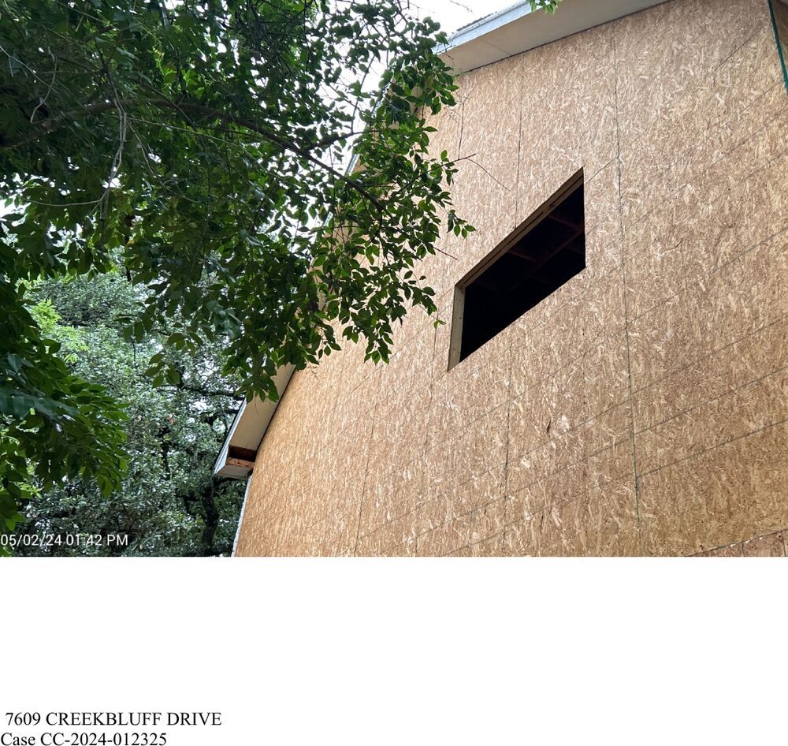
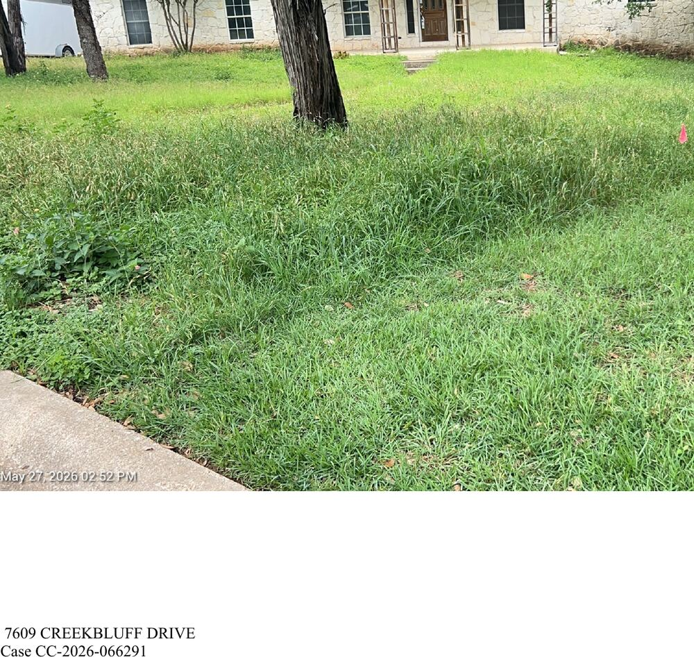
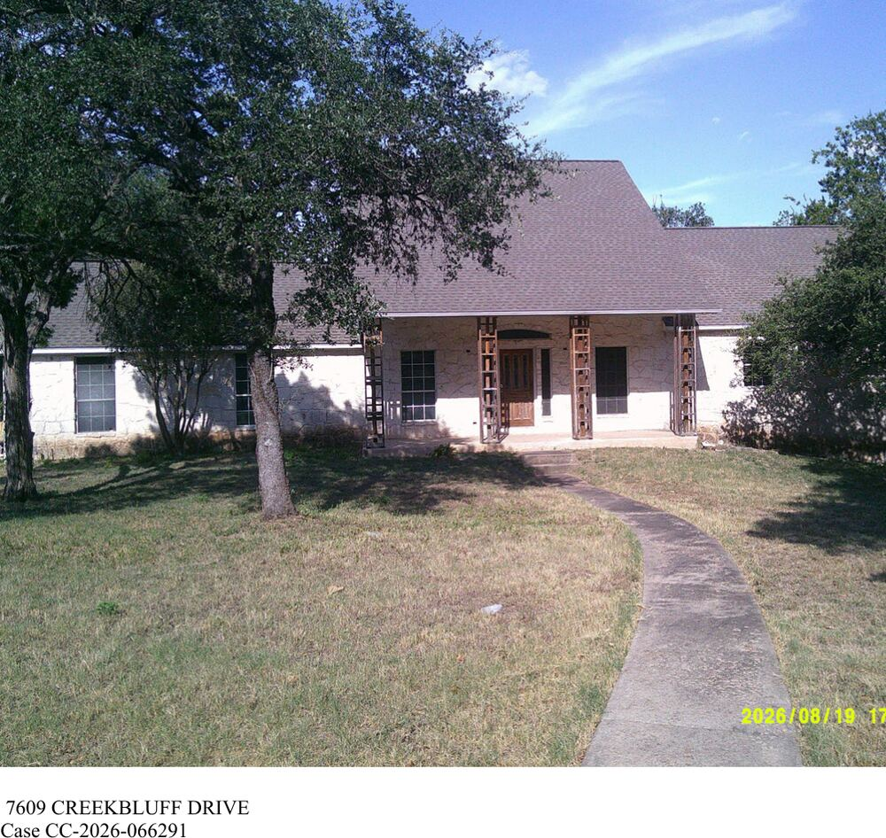

This report reads one document and nothing else. On September 2, 2026, the City of Austin Development Services Department released its response to Public Information Request C330239 — 266 pages covering the code-enforcement history of a single house at 7609 Creekbluff Dr. It contains case histories in the inspectors' own words, every Notice of Violation the City issued, the internal email traffic between code managers and the District 10 council office, the returned certified-mail envelopes, and 147 dated photographs taken by five different code officers between August 2023 and August 2026. Read straight through, it is the clearest account yet of how this property has been handled — and it is an account assembled entirely by the City itself.
What follows is a summary of that file: what is in it, what the inspectors wrote, which code sections were cited and which were not, and where the record contradicts itself. Nothing here is inferred from outside sources. Every statement is tied to a page of the response, and the response is published in full alongside this report.1
I. What the City produced
The response is not a narrative. It is a stack of system exports, scanned notices, printed emails and photograph sheets, assembled in the order the department's records system produced them, with a handful of documents duplicated. Its contents break down as follows.
- pp. 1–8Summary-of-complaint reports for the two most recent complaint cases, CC‑2026‑066291 and CC‑2024‑012325, each with its full case log, violation list and notice history.
- pp. 9–25The Case History Report for Property 760552 (pages 44–60 of a 60-page report), covering five complaint cases: CC‑2023‑113084, CC‑2024‑012325, CC‑2025‑099725, CC‑2025‑099760 and CC‑2026‑066291.
- p. 26An Austin Water Water/Wastewater Service Plan Verification form, submitted by Steve Johnson and dated August 7, 2024.
- pp. 27–49Printed email correspondence: the 2024 inspector-to-owner exchange, the 2024–2026 District 10 council-office chain, and two October 2019 internal emails about the 2018 administrative citation.
- pp. 50–106Notices of Violation and violation reports for CV‑2026‑067670, CV‑2024‑012329 and CV‑2023‑125768, several reproduced twice.
- p. 107Administrative Citation 002474, handwritten, dated July 23, 2018.
- pp. 108–110Travis Central Appraisal District Property Summary Report for parcel 497234, printed June 1, 2026, including the full recorded deed history back to 1983.
- pp. 111–115Scanned certified-mail envelopes and USPS return receipts for the 2024 and 2026 notices.
- p. 116Texas Secretary of State entity record for 7609 Creekbluff LLC, filing #806107975.
- pp. 117–118TCAD property screenshots captured by City staff in September 2023 and February 2024.
- pp. 119–266147 photographs, each stamped with the address, date, case number and photographing officer, running from August 31, 2023 through August 19, 2026.
II. Nine cases, in one file
The file collects every case the department opened on the property from 2018 forward. Complaint cases carry a CC prefix; the violation cases they generate carry CV. Two of the nine never produced a citation at all.
| Case | Opened / dated | Officer | How it ended |
|---|---|---|---|
| AHC 002474 | Jul 23, 2018 | Marco Ramos #13074 | Dismissed at investigator's request, Oct 22, 2019 |
| CC‑2023‑113084 | Aug 30, 2023 | Mitchell Alvarez | Closed Jan 4, 2024 — voluntary compliance |
| CV‑2023‑125768 | NOV Sep 29, 2023 | Mitchell Alvarez | Cleared |
| CC‑2024‑012325 | Jan 31, 2024 | Alvarez → Darin Wesley | Closed Dec 11, 2025 — administrative reasons |
| CV‑2024‑012329 | NOV Feb 7, 2024 | Mitchell Alvarez | 2 items cleared, 2 released |
| CC‑2025‑099725 | Aug 6, 2025 | Keenan Curry | Aug 11, 2025 — no violations found |
| CC‑2025‑099760 | Aug 6, 2025 | Keenan Curry | Closed as duplicate of 099725 |
| CC‑2026‑066291 | May 26, 2026 | Erica Thompson → Wesley | Closed Aug 31, 2026 — voluntary compliance |
| CV‑2026‑067670 | NOV Jun 2, 2026 | Erica Thompson | All three items cleared |
III. Every code section the City cited
Across eight years and four notices, the City cited eight code provisions. They are worth listing in full, because the pattern in them is the single most important fact in the file: every one is either an exterior-maintenance item or a permit item. Not one is a habitability, unsafe-structure, vacant-structure or nuisance provision.
| Notice | Section | What the City required | Window | Status |
|---|---|---|---|---|
| AHC 002474 Jul 23, 2018 | Work without permit | Handwritten citation issued on site to Gilyan and Johnson Investments LLC | Hearing | Dismissed 2019 |
| CV‑2023‑125768 Sep 29, 2023 | Obtain Permit §301.4 | "Owner must re-activate expired permit on the property. 19 237817 BP (Express: remove sheetrock and insulation for exploratory purposes)" | 30 days | Cleared |
| CV‑2024‑012329 Feb 7, 2024 | Structural Members §304.4 | "Corner structure post in the front is in disrepair. The middle post has a hole. Repair or replace both posts" | 30 days | Cleared |
| Obtain Permit §301.4 | "Obtain building permits and any trade permits for the remodeling of the interior residential house" | 30 days | Released | |
| Roofs and Drainage §304.7 | "The roof facia wood material near the front window is deteriorated and damaged" | 30 days | Cleared | |
| Sanitary Condition §10‑5‑21 | Grass and weeds over 12 inches, trash, debris | — | Released | |
| CV‑2026‑067670 Jun 2, 2026 | Protective Treatment §304.2 | "Front porch posts are missing the protective treatment and the footings… Replace/repair front porch post trims and ensure stability and the footings are sound" | 30 days | Cleared |
| Exterior Walls §304.6 | "Siding missing from left side of house and surrounding garage door. Brick facade missing from front left corner of house" | 30 days | Cleared | |
| Sanitary Condition §10‑5‑21 | "Mow grass and maintain to under 12 inches at all times" | 7 days | Cleared |
In 43 logged inspections over three years, no inspector in this file ever records an assessment under the unsafe-structure, vacant-structure, attractive-nuisance or unsafe-occupancy provisions of the International Property Maintenance Code as locally amended — IPMC 111.1.3, 111.2, 202.2, 305.1.1 or 404.5. Those are precisely the sections the HOA asked the City to apply in writing in January 2024.2 The file contains no document in which any of them is evaluated and found not to apply.
IV. August 2023: two fires, and an inspection that does not mention them
The oldest complaint in the file was filed August 30, 2023. Its text is specific, and it is not about paint:
Inspector Mitchell Alvarez responded the next day. His entire note reads:
The complaint's central allegations — two fires, vegetation contacting power lines, an Austin Energy response, and a request that the structure be determined dangerous — appear nowhere in the inspection note, nor in any of the four follow-up notes that close out that case. The case was reframed on intake as "work without permit and property abatement," and it was on the permit item alone that the City issued its September 29, 2023 notice. On January 4, 2024, Alvarez closed the case with a single line: "I researched permit status and noticed permit is now active. No further action required, case closed."3
V. 2024: the stop-work order
Four weeks later the property was back. The January 31, 2024 complaint — "Vacant house posing danger to the community and remodeled work inside" — produced the most substantive enforcement episode anywhere in this file, and it is worth following closely, because of how it ends.
Alvarez inspected on January 30, found deteriorating front columns and broken fascia, and issued a Notice of Violation on February 7 with four items, including a requirement to obtain building and trade permits for the interior remodel. On February 16, the property's previous owner — Steve Johnson, acting as general contractor for the new owner Michael Bueker — wrote back that a new permit was expected "in 2-3 days."4 It did not arrive. Work, however, did.
By March 27 a crew was working inside; the four front columns had been stripped and rear siding removed. By May 2 the rear windows and doors were gone. Alvarez photographed it and escalated:

The stop-work order was posted the same day. This is the point at which the file's enforcement momentum stops. The City had, in writing, a manager's confirmation that work exceeded the permit, an owner's admission, and a posted order. What the file shows next is not escalation. It is a loop.
VI. Nine inspections, one sentence
Between June 6, 2024 and February 19, 2025, Alvarez logged nine follow-up inspections. Seven of them carry a note that is verbatim identical:
Twice in that stretch the inspector emailed the general contractor about the expired permit. On September 18, 2024, he recorded the reply — "Our WWWSPV has been approved and we now have everything we need to submit today!" — and then a four-word notation that is itself part of the record: "email not saved."5
The February 19, 2025 entry ends: "I will also issue new NOV since last notice has expired this month." No new notice appears in the file. The next entry in the case log is dated December 11, 2025 — a gap of nine months and twenty-two days with no logged activity on an open case.
VII. December 2025: closed without verifying the inside
When the case resumed, it was a different inspector. Darin Wesley went out on December 11, 2025, found the house vacant, knocked, left his card, and spoke with a neighbor across the street who told him "this property has been vacant since 2016 and the ownership has changed several times."6 He closed his note: "Case to be staffed with my Supervisor to determine next steps in the process."
The same day, Code Supervisor Erica Thompson closed the case. Her closing note is the most consequential sentence in the file:
"Both structural violations observed on the NOV have been abated and the work inside structure was never verified."
That sentence appears in the City's own case log.7 The February 2024 notice had required the owner to "obtain building permits and any trade permits for the remodeling of the interior residential house." That item was never marked cleared; the file records it as Released — the disposition used when a violation is dropped rather than corrected. Twenty-two months after a stop-work order was posted over interior work that a manager confirmed exceeded the permit, the City closed the case having never gone inside.
The closing note continues: "If work commences neighbors will call in again. As of current, there are no violations to keep this case open."
VIII. August 2025: "There is no actual code violations"
Four months before that closure, two neighbors had filed complaints on the same day, August 6, 2025. Both are reproduced in the file in the complainants' own words. One reads, in part: "It has been abandoned for over a decade… it is scary, unsightly, dangerous, a fire hazard esp backing up to a greenbelt. Please do something." The other: "Has been abandoned for over 10 years… Owner is never around and no one knows who he is."8
Inspector Keenan Curry closed the second as a duplicate. His entire disposition of the first, five days later, is one line:
The two photographs attached are wide streetside views taken from the opposite curb.9 Nine months later, a different officer standing on the same lawn recorded three violations on the same exterior — missing protective treatment and footings on the front porch posts, missing siding around the garage door, and missing brick facade at the front left corner. Nothing in the file records any change to the porch posts, the siding or the brick between August 2025 and May 2026. Both readings of the same house are in the same record, and the file offers no explanation for the difference.
IX. May 2026: the department answers the neighborhood
In May 2026 the District 10 council office asked Code Compliance for a status update, after a constituent liaison attended a Bull Creek HOA meeting.10 The reply, from Division Manager Daniel Armstrong on May 15, 2026, is the department's fullest statement of its position on this property, and it is a direct answer to the HOA's January 2024 request that the unsafe-structure provisions be applied. Two bullets carry the department's reasoning:
The same email then commits the department to act:
Twelve days later, on May 27, 2026, Supervisor Thompson inspected and noted three violations. The file contains no referral to the Building and Standards Commission, and no record of any quasi-judicial or judicial hearing.
The department's answer treats the HOA's request as an aesthetic one — a neighborhood wanting the house to match its neighbors. The January 2024 letter it was answering did not ask for that. It cited five specific provisions of the locally amended IPMC and described the conditions it said triggered each: open walls, exposed wiring, broken windows, absent sanitary and heating facilities, an unsecured structure, and a collapsing deck.2 Whether those conditions existed is a question of fact that an interior inspection would settle. The file shows no interior inspection was conducted.
X. August 2026: "the repairs made to the exterior"
The final case in the file, CC‑2026‑066291, ran from May 26 to August 31, 2026. Thompson found the three violations on May 27 and issued Notice of Violation CV‑2026‑067670 on June 2, giving thirty days for the porch posts and the exterior walls and seven days for the weeds. The porch-post remedy was stated precisely: "Replace/repair front porch post trims and ensure stability and the footings are sound."
Darin Wesley conducted the follow-up on August 19. His note, in full:
On August 31 he closed the case: "This case is closed as of August 19, 2026 follow up inspection cleared all deficiencies." All three violations were marked Cleared.
This notice is examined on its own, item by item — including photographs of the cited conditions taken on September 4, 2026, sixteen days after the case was closed — in Cleared on Paper: Notice of Violation CV‑2026‑067670.
The City photographed the property on both dates. Those photographs are in this file. Set side by side, they show the mowing — and they show the porch posts.


These two images are the City's own, taken 84 days apart by two of its officers, and reproduced here from the released file without alteration beyond cropping to the photograph area. On their face they show no change to the front porch posts — the specific condition §304.2 was cited for and the specific remedy the notice required. The August photographs do show the lawn mowed, which is the §10‑5‑21 item.
What they cannot establish is the footing condition below grade, or whether work was performed on the left-side siding and front-left brick facade cited under §304.6 — neither elevation is clearly framed in the August set. Those items may or may not have been addressed. The record simply does not show it, and the inspector's note does not describe what was repaired.


XI. The notices that were never delivered
The file includes the scanned envelopes and USPS return receipts, and they show a pattern the case summaries record only in shorthand.
| Notice | Addressee | Certified article | Outcome |
|---|---|---|---|
| CV‑2023‑125768 Oct 2, 2023 | Michael Bueker | 7020 2450 0001 3621 6557 | Delivered — green card signed "Mike Bueker" |
| CV‑2024‑012329 Feb 7, 2024 | Michael Bueker | 7020 0640 0000 5005 5291 | Returned to sender — UNCLAIMED, Mar 19, 2024 |
| CV‑2026‑067670 Jun 2, 2026 | 7609 Creekbluff LLC | 9589 0710 5270 3380 1275 48 | Returned to sender — ATTEMPTED NOT KNOWN, UNABLE TO FORWARD, Jun 10, 2026 |
| CV‑2026‑067670 Jun 2, 2026 | 7609 Creekbluff LLC c/o Steve W. Johnson, Registered Agent | 9589 0710 5270 3380 1275 55 | Returned unexecuted, Jun 18, 2026 |
The only notice in this file with a signed proof of delivery is the September 2023 one. Both certified copies of the currently operative 2026 notice came back. That matters beyond bookkeeping: the notice carries a statutory clause prohibiting sale, lease or transfer of the property until compliance is attained unless the buyer is given a copy and the City is given the buyer's name — a restriction whose practical force depends on the owner having received it. It also carries the twenty-day appeal window to the Building and Standards Commission, which runs from the date of the notice regardless of delivery.
The file offers a plain explanation for the 2026 return. The mailing address on the notice, PO Box 684196, Austin TX 78768, is the address TCAD carries for the parcel. The Texas Secretary of State record reproduced two pages later gives a different address for both 7609 Creekbluff LLC and its registered agent: 3100 Kramer Ln Apt 534, Austin TX 78758.11 Both documents are in the City's own production. The notice went to neither of the SOS addresses.
XII. The 2018 citation, and why it was dismissed
At page 107 the file reproduces the handwritten Administrative Citation the City has never publicly explained. Ticket 002474, violation date July 23, 2018 at 12:54 p.m., location 7609 Creekbluff Dr, violation "WORK WITHOUT PERMIT," issued by Code Officer Marco Ramos #13074 to Gilyan and Johnson Investments LLC of Round Rock.14 In the box for the hearing date, in place of a date, is written: "call number below."
Fifteen months later, two emails settle it. On October 22, 2019 at 5:50 p.m., Investigator Khalid Marshall wrote to four colleagues:
Seven minutes later he sent a correction:
The stated grounds for dismissing the citation are that the file could not be located and the matter had aged past a year. The stated grounds for the compliance finding — "it appears that all the required permits have been pulled" — is the same reasoning that would close the 2023 case four years later, and it is the reasoning the HOA disputed in writing in January 2024 after checking the public permit search and finding none.2
XIII. Two documents that reframe the "remodel"
Two records in the file, neither of them enforcement documents, materially change how the work at this property should be read.
The water service form
At page 26 is an Austin Water Water/Wastewater Service Plan Verification form, submitted by Steve Johnson on August 7, 2024 — the "WWWSPV" his September 2024 email to the inspector referred to. It states the existing house has 2 bathrooms and requests a proposed bath count of 6.5, with a meter upgrade from ⅝-inch to 1-inch. Austin Water's own comments on the form: "Shared service insufficient to handle meter upgrade- Tap plan required."12
A permitted change from two bathrooms to six and a half is not maintenance. It is a gut renovation of a 3,742-square-foot house, and it was formally in motion with Austin Water in August 2024 — three months after the stop-work order, and during the stretch in which the code file records nine identical "no new construction work is being done" inspections.
The appraisal record
The TCAD Property Summary at pages 108–110 shows the improvement value falling as the house sits: $608,000 in 2023, $551,588 in 2024, $411,574 in 2025, $459,636 in 2026. Total appraised value fell from $1,048,000 to $899,636 over the same period, against land held flat at $440,000. The deed history on the same page confirms the chain documented in the main report: Gilyan & Johnson → Johnson (Oct 5, 2018) → Bueker (Oct 14, 2022) → 7609 Creekbluff LLC (July 30, 2025).13
XIV. Discrepancies inside the file
Several inconsistencies appear within the production itself. They are recorded here without inference, because each is a question the City can answer from its own systems.
| Field | One record says | Another says |
|---|---|---|
| Zoning | "Zoned as SF‑2" — every Notice of Violation, 2023, 2024 and 2026 | "Zoning: MF‑2‑CO" — TCAD Property Summary Report, printed June 1, 2026 (p. 108) |
| Property owner of record | "7609 CREEKBLUFF LLC" — summary of complaint CC‑2026‑066291 (p. 1) | "BUEKER MICHAEL JEFFREY – Owner" — case history for the same case, printed the same day (p. 23) |
| Interior condition | Structural violations "abated"; case closed Dec 11, 2025 (p. 7) | "the work inside structure was never verified" — same sentence, same note |
| Exterior condition | "There is no actual code violations," Aug 11, 2025 (p. 19) | Three violations found on the same exterior, May 27, 2026 (p. 25) |
| August 2026 repairs | "The repairs made to the exterior of the structure" (p. 24) | City photographs of the cited posts, taken the same day, show them unchanged (pp. 265–266) |
XV. What is not in the file
A public-information response is defined as much by its gaps. The department produced its complete case histories for this property. Within them there is:
- absentAny referral of this property to the Building and Standards Commission, at any point from 2018 to August 2026.
- absentAny unsafe- or substandard-structure determination, or any document evaluating the IPMC provisions the HOA cited and finding them inapplicable.
- absentAny interior inspection after 2019. Every observation of the inside in this file is made through a window or reported by the contractor.
- absentAny administrative hearing record following the 2018 citation, which was dismissed before a hearing was held.
- absentAny follow-up on the two fires and the vegetation–power line contact described in the August 2023 complaint.
- absentThe September 2024 email from the general contractor, which the inspector logged and then noted "email not saved."
- absentAny record of what specifically was repaired in August 2026 to satisfy §304.2 and §304.6 before the case was closed.
XVI. Questions this record raises
These are framed as questions because the file does not answer them, and because the City is the only party that can.
1. On what observation was the §304.2 porch-post violation marked Cleared on August 19, 2026, given that the department's own photographs from that date show the posts in the condition cited?
2. What repairs were made to the left-side siding and the front-left brick facade cited under §304.6 between June 2 and August 19, 2026, and were they permitted?
3. Why was the §301.4 permit violation from the February 2024 notice marked Released rather than cleared, and does the department consider the interior remodel to be permitted today?
4. Given that Notice CV‑2026‑067670 was returned undelivered at both addresses, and that the Secretary of State address for the LLC and its registered agent appears two pages later in the same file, was the notice re-served? If not, does the department consider the sale-and-transfer restriction and the twenty-day BSC appeal window to have run?
5. How does the department reconcile "There is no actual code violations" (August 11, 2025) with three violations found on the same exterior on May 27, 2026, absent any recorded intervening change?
6. Division Manager Armstrong committed on May 15, 2026 to escalate "to either a quasi-judicial or judicial hearing" if violations were noted. Violations were noted twelve days later. Why was the matter closed instead?
7. Has this structure ever been formally assessed against IPMC 111.1.3, 111.2, 202.2, 305.1.1 and 404.5 as locally amended by §25‑12‑213 — and if so, where is that assessment?
XVII. How to read the source
The complete 266-page response is published alongside this report. Readers are encouraged to check every statement above against it; the page citations in the footnotes refer to PDF page numbers in the published file.
- M PIR C330239 — Development Services response, 266 pages (PDF, ~31 MB). Released by the City September 2, 2026. Image resolution reduced for web publication; content is unaltered and unredacted beyond the City's own redactions.
- M1 Front porch posts, May 27, 2026 — Insp. Thompson (source p. 252).
- M2 Front porch posts, August 19, 2026 — Insp. Wesley (source p. 265).
- M3 Rear elevation, May 2, 2024 — Insp. Alvarez, the day before the stop-work order (source p. 184).
- N Cleared on Paper — NOV CV‑2026‑067670 — the closing case examined item by item, with dated photographs from September 4, 2026.
{kind=link}
Method & limits
This report summarises a single public record and draws on nothing else. The 266-page response was read in full: every page of machine-readable text was extracted and reviewed, and every scanned or photographic page was examined as an image. Case numbers, dates, code sections, certified-mail article numbers and quoted passages were transcribed from the document and checked against the duplicate copies the City included.
Quotations from inspector case logs are reproduced verbatim, including the department's system artefacts — the records system renders apostrophes and quotation marks as an inverted question mark in some exports, and those have been silently restored to the punctuation they plainly represent. No other wording has been changed. Ellipses mark omissions.
Photographic comparisons are stated conservatively: this report says what two photographs of the same subject do and do not show, and it identifies what they cannot resolve. The images are cropped to the photograph area of the page and are otherwise unaltered.
One redaction correction has been made to the published source file. A vehicle registration number belonging to a private individual is redacted by the City at three places in its production but appears unredacted at page 41, where the same inspection note is quoted back in an email. That single instance has been blacked out in the web copy published here, matching the City's own treatment of it elsewhere in the same document. No other content has been altered, obscured or removed. The unmodified file as released remains available from the City on request under the same PIR number.
This report does not allege criminal conduct by any person or entity. Where the record supports a factual statement, it is stated and cited. Where it raises a question it does not resolve, the question is framed as a question. Corrections supported by a source are welcomed.
Notes & Sources
- City of Austin, Development Services Department, response to Public Information Request C330239, released September 2, 2026; 266 pages. Published in full at exhibits/pir-c330239-dsd-response.pdf. All page citations in these notes are to PDF page numbers in that file.
- Mark A. Garcia to the Office of Council Member Alison Alter, District 10, "Ongoing challenges with code compliance office regarding 7609 Creekbluff Dr.," January 14, 2024, reproduced at PIR C330239 pp. 42–44. The letter cites, in relation to Austin City Code §25‑12‑213 (local amendments to the International Property Maintenance Code): 111.1.3 Structure Unsafe for Human Occupancy; 111.2 Closing of vacant structures; 202.2 Nuisance; 305.1.1 Unsafe conditions; and 404.5 Unsafe occupancy. It also states that the 2023 case was closed on "voluntary compliance" based on permits said to be filed, and that a public permit search returned none.
- Case history, complaint CC‑2023‑113084, PIR C330239 pp. 9–12; violation report CV‑2023‑125768 (Notice of Violation dated September 29, 2023, Code Officer Mitchell Alvarez), pp. 73 and 101.
- Case history, complaint CC‑2024‑012325, PIR C330239 pp. 3–8 and 13–18; email from Steve Johnson to Insp. Mitchell Alvarez, February 16, 2024, reproduced at pp. 14, 29, 31 and 33; violation report CV‑2024‑012329 (February 7, 2024), pp. 65 and 80.
- Case log entry, September 18, 2024, PIR C330239 pp. 6 and 16. "WWWSPV" is the Austin Water Water/Wastewater Service Plan Verification form; the approved form is reproduced at p. 26.
- Follow-up inspection note, Insp. Darin Wesley, December 11, 2025, PIR C330239 pp. 7 and 17.
- Closing note, Code Supervisor Erica Thompson, December 11, 2025, "Closed due to Administrative Reasons," PIR C330239 pp. 7 and 17. The violation dispositions for CV‑2024‑012329 appear at p. 18: §304.4 Cleared, §304.7 Cleared, permit item Released, §10‑5‑21 Released.
- Complaints CC‑2025‑099725 and CC‑2025‑099760, both filed August 6, 2025, PIR C330239 pp. 19 and 21. Both are quoted again verbatim in the Code Compliance division manager's email of May 15, 2026, at p. 34.
- Photograph sheets, Case CC‑2025‑099725, Code Officer Keenan Curry, dated 8/11/2025, PIR C330239 pp. 241–242.
- Email chain, "code compliance regarding 7609 Creekbluff Dr.," District 10 constituent liaison to Code Compliance, May 14, 2026, and replies from Dedric Knox (May 14) and Daniel Armstrong (May 15), PIR C330239 pp. 34–37. The chain also carries the earlier 2024 correspondence at pp. 38–44.
- Notice of Violation CV‑2026‑067670 and violation report, PIR C330239 pp. 50–55 (owner copy) and 57–62 (registered-agent copy); returned envelope, p. 114; return receipt, p. 115; notice history showing "Returned unexecuted 06-10-26," p. 2. Texas Secretary of State entity record for 7609 Creekbluff LLC, filing #806107975, p. 116. Returned envelope for the February 2024 notice, p. 111; signed return receipt for the October 2023 notice, p. 113.
- Austin Water Water/Wastewater Service Plan Verification form, service address 7609 Creekbluff Dr, applicant Steve Johnson, dated August 7, 2024, PIR C330239 p. 26. Existing bath count 2; additional bath count 4.5; proposed bath count 6.5; existing meter ⅝", proposed 1".
- Travis Central Appraisal District, Property Summary Report 2026 for PID 497234, printed June 1, 2026, PIR C330239 pp. 108–110. Improvement built 1990; main area 3,742 sq ft; gross building area 8,657 sq ft; land 1.1406 acres.
- Administrative Citation 002474, City of Austin Code Department, PIR C330239 p. 107. Emails from Inv. Khalid Marshall #5965, October 22, 2019, 5:50 PM and 5:57 PM, pp. 45–48.
Legal Notice
This report is published in the public interest. It summarises and quotes a City of Austin public record obtained under the Texas Public Information Act, and it is cited to that record throughout. Statements about what the record shows are statements about the document, not conclusions about any person's intent. Where the record raises a question it does not answer, the report frames it as a question and does not allege wrongdoing or criminal conduct by any person or entity. This report is not affiliated with the City of Austin or any governmental body. Corrections supported by a source are welcomed via the repository's issue tracker.